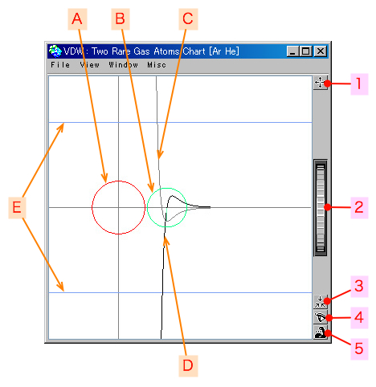
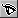

2007年01月25日
希ガス２分子間の相互作用 - チャート
もくじ：
希ガス２分子間の相互作用のメインウィンドウです。
希ガス２分子間のファン・デル・ワールス相互作用の力やポテンシャルの関数を表示します。
SPIDAR-G に接続すると、グリップを３次元空間内で操作することができますが、グリップの位置からターゲットとの距離を計算し、２次元で表示します。
グリップの位置によって変化する分子間力の強さを確認するときに便利です。
SPIDAR-G と接続していないときは、マウスでグリップの位置を移動できます。
この場合は、グリップとターゲットの位置を結んだ直線上に沿って動きます。
チャートを開くには、HaptiChemランチャーの「Tools」->「VDW : Two Rare Gas Atoms」メニューを選択します。
関連しているウィンドウも同時に開きます。
画面説明
チャートの画面は以下のようになっています。

- 1 : ドラッグボタン
- 2 : Ｚホィール
- 3 :
 キャリブレーションボタン
キャリブレーションボタン
- 4 :  視覚ボタン
- 5 :
 力覚ボタン
力覚ボタン
詳細は「共通操作」を参照してください。
- A : ターゲット
- B : グリップ
- C : ポテンシャル
- D : 力
- E : 限度
ウィンドウの上部にあるメニューです。
ビューアに表示されている状態の画像ファイルを作成します。
デフォルトのファイル名は、[年月日時分秒].jpgです。
保存される画像のサンプル
ウィンドウを閉じます。
このウィンドウに関連した、ビューファインダや設定などのウィンドウも同時に閉じます。
ポテンシャル曲線の表示／非表示の設定をします。
灰色で描かれている曲線です。
力の曲線の表示／非表示の設定をします。
黒色で描かれている曲線です。
正の部分がターゲットへの引力、負の部分が斥力になります。
限度の表示／非表示の設定をします。
青色で描かれている直線です。
SPIDAR-G で力を出すことのできる範囲です。
力の関数で、この限度を超えていても、限度までしか力を出しません。
ビューア内に表示しているものを最適な状態で見られます。
実行条件を設定します。
詳細は「希ガス２分子間の相互作用 - 設定」を参照してください。
ビューファインダのウィンドウを開きます。
詳細は「希ガス２分子間の相互作用 - ビューファインダ」を参照してください。
スパイダー・ゲージのウィンドウを開きます。
チャートで表示されている力の関数に基づいて、スパイダーに力を提示しています。
グリップの位置によって、X, Y, Z軸のそれぞれの方向にどれほどの力がかかるのか確認することができます。
詳細は「スパイダー・ゲージ」を参照してください。
詳細情報の書かれたウィンドウが開きます。
- van der Waals interaction - ファン・デル・ワールス相互作用
ターゲット, グリップの順に原子種を表示します。
- van der Waals radius - ファン・デル・ワールス半径
ターゲットとグリップの原子半径をそれぞれ表示します。
- Interatomic distance - 原子間距離
現在位置でのターゲットとグリップの距離を表示します。
- Potential energy - ポテンシャルエネルギー
現在位置でのポテンシャルエネルギーの数値を表示します。
- Intermolecular force - 分子間力
現在位置での分子間力の数値を表示します。
基本説明、メニュー等の説明が記述してある取扱説明書 (このページ)をブラウザで開きます。
このメニューは、ランタイム版では選択することができません。
開発時にプログラムの状態などを確認するためのメニューです。
選択可能な場合は、インスペクタが開きます。

{kind=link}


{kind=link}
{kind=link}
{kind=link}
{kind=link}
{kind=link}
{kind=link}
{kind=link}
{kind=link}
{kind=link}
{kind=link}